01 / CLOUD CORRIDORA slow public room between the trees and the water
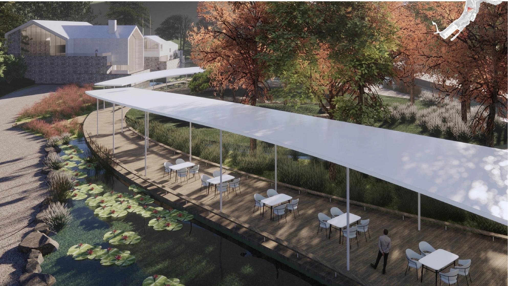
02 / CLOUD CORRIDORA light roof stitching together water, gardens and movement
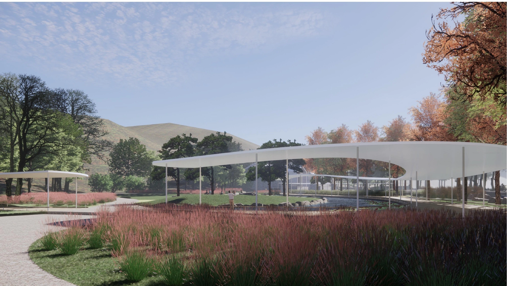
03 / EVERYDAY GROUNDSmall paths and open lawns make the landscape inhabitable
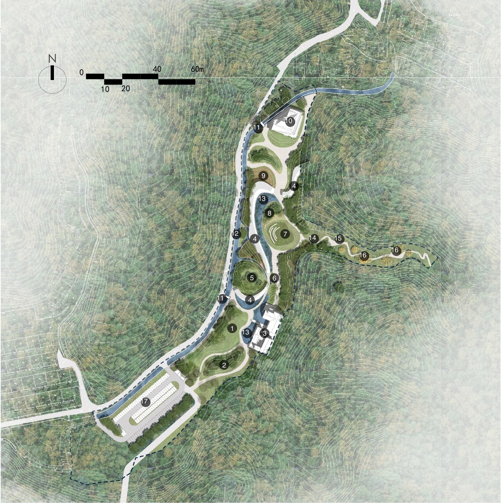
04 / MASTERPLANA village landscape organized by water, topography and shared life
01 / 04
LANDSCAPE PLANNING / CULTURAL COMMUNITY
Miyun Wenyi / Shuishuyu Village
01 / PROJECT RECORD
A mountain village cultural campus where landscape, learning and everyday community life meet.
Miyun Wenyi is a first-opening-area scheme for Shuishuyu Village in Beijing’s Miyun District. The proposal brings a sequence of gardens, water edges, learning spaces and community rooms into one slow landscape.
Its ambition is described as a future community’s future life: a place for morning runs, quiet rooms, creative work, shared meals, children’s play and evenings on the mountain-view terrace.
Year
2019.08–2023.07 First opening area scheme
Location
Shuishuyu Village, Miyun Beijing, China
Type
Landscape planning Cultural community
Phase
Overall scheme First opening area
Role
Spatial strategy, landscape framework and programme study
Scope
59,250 m² planned construction land; 40,200 m² total floor area; 175 parking spaces
Project basis
Shuishuyu Village “Miyun Wenyi” first opening area overall scheme, January 2021 source deck
Practice
Beijing AN-Design Architects
Project structure
01
Site reading
Terrain, water, access and view corridors establish a clear sequence from the village edge to the upper academy.
KEY CONDITIONS
North-high / south-low terrain 1.5% overall slope 4 m level difference to Li Academy
The scheme starts with a precise reading of terrain, access and view.
The first opening area follows a north–south valley condition. The site rises toward the north and falls toward the south at an overall slope of 1.5%, while the exhibition center and Li Academy are separated by a four-metre level difference.
Movement is kept simple and visible: vehicle access stays at the edge, pedestrians follow a slower landscape route, and the Cloud Corridor provides a continuous under-roof walk between gardens, water and buildings.
59,250 m²planned construction land / 88.8 mu
40,200 m²total floor area
175planned parking spaces
02A / OVERALL PLANSeventeen landscape and programme components
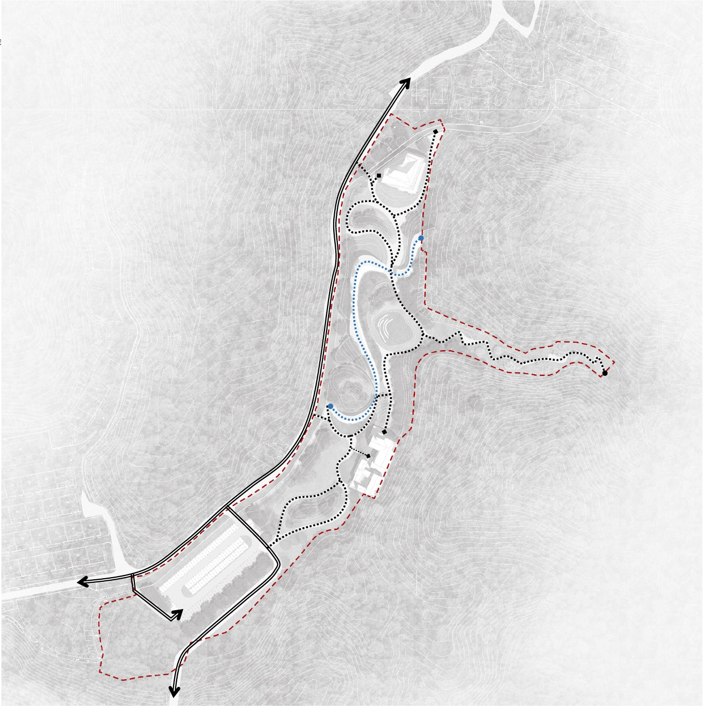
02B / MOVEMENTVehicle, pedestrian and under-corridor routes
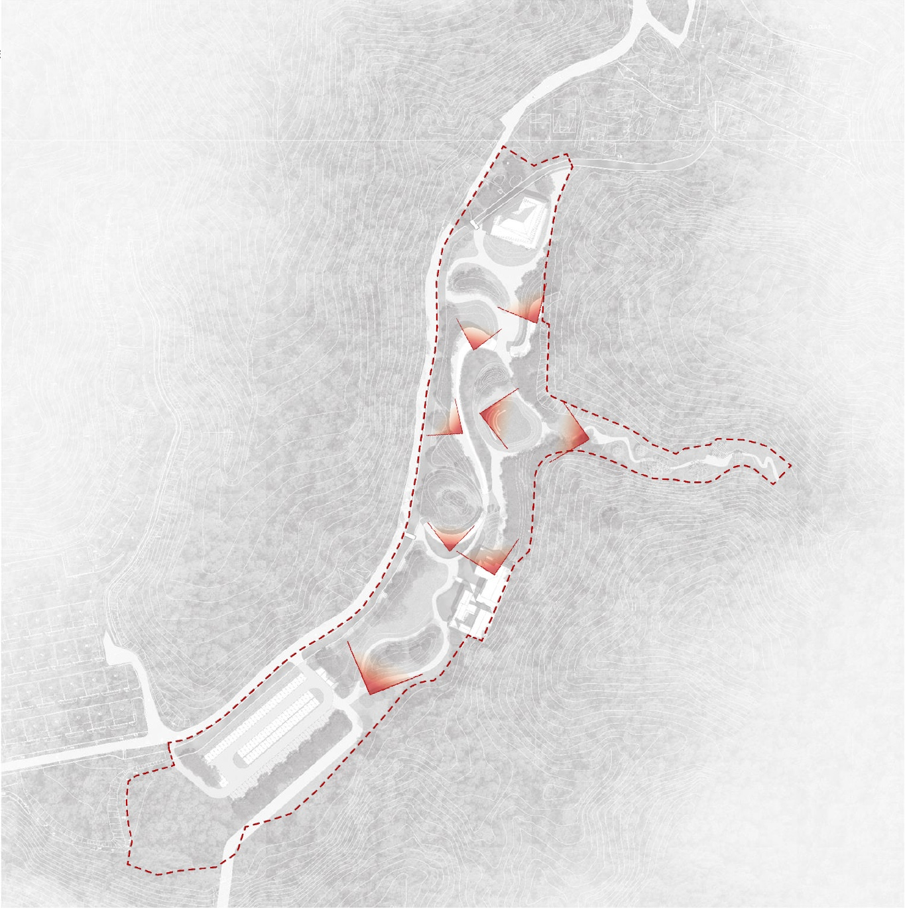
02C / VIEWSView corridors held open through the valley
A light landscape spine makes the valley easy to read and easy to inhabit.
The landscape is organized as a sequence rather than a collection of objects. Water, paths, lawns and tree rooms create a continuous public ground, while the Cloud Corridor gives the first opening area a recognizable shared address.
01Water spine
Lotus ponds, cascades and planted edges make seasonal change visible along the main route.
02Cloud Corridor
A thin, curved roof provides shade, weather protection and a slow social promenade.
03Landscape rooms
Pine gardens, flower-sea planting, activity lawns and a lawn theater give each pause a different character.
04Shared public ground
Academy, exhibition, play and parking are connected without losing the village landscape.
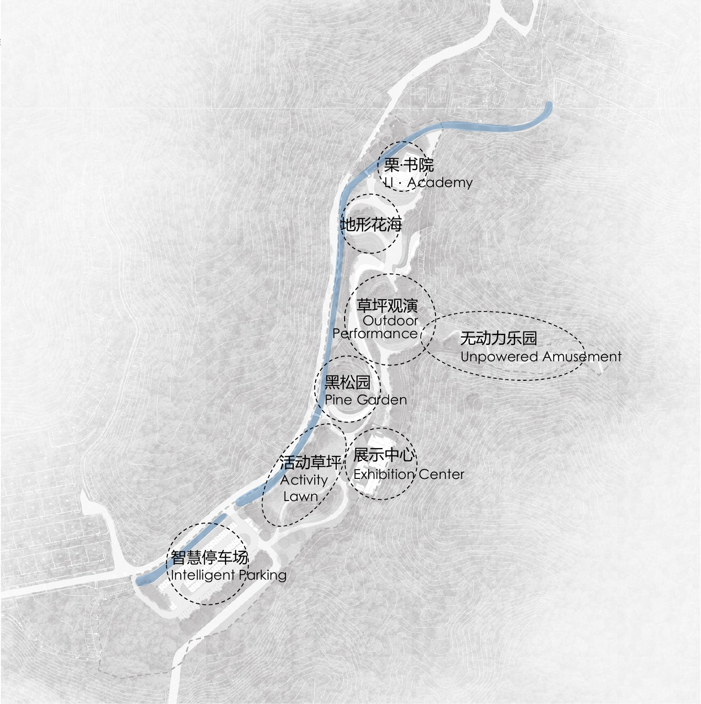
03A / LANDSCAPE ZONESLi Academy, performance, play and gardens
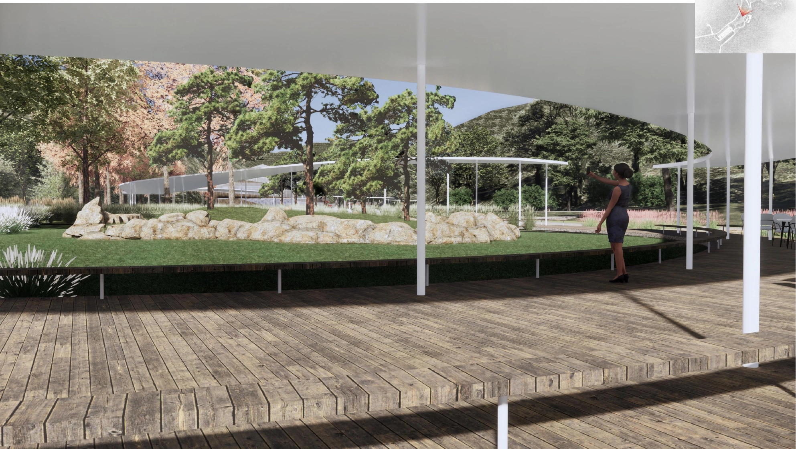
03B / CLOUD CORRIDOROne roof, many landscape rooms
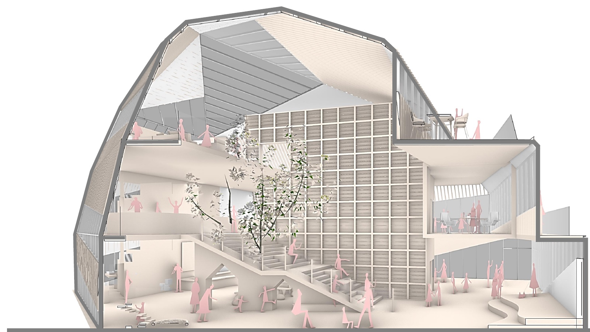
03C / SECTIONAL LIFEStairs, terraces and rooms around a shared void
04 / PROGRAMME AS COMMON GROUND
Three levels turn a landscape proposal into a daily village.
The design idea is “the future life of a future community.” A life-experience center, a community library and a neighborhood social hall stack different rhythms of making, reading, eating, meeting and looking toward the mountain.
The programme is compact, but its edges remain open to the landscape.
011F / Life Experience Center · 680 m²
Avant-garde theatre, children’s farm, children’s house, simple workshop and a small dessert shop.
022F / Community Library · 448 m²
Art space, guqin tea room, neighborhood library and a creative lifestyle store gathered around a social stair.
03Terrace / Neighborhood Social Hall
Shared dining, a community living room, a simple attic meal space and a mountain-view terrace.
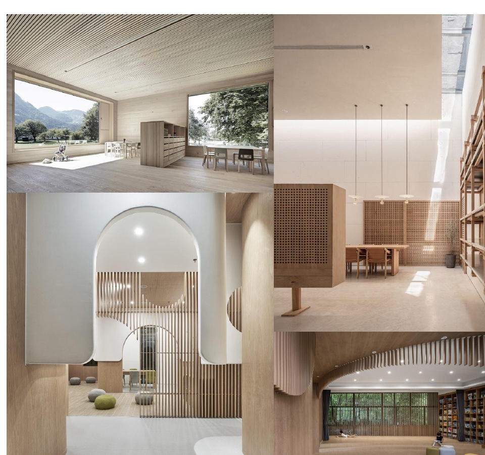
04A / PROGRAMME STUDYLight, timber and landscape views across three levels
BUILDING RECORD805 m² site areaCommunity building studyBUILDING RECORD1,130 m² building areaThree-level cultural and social programmeBUILDING RECORD1.40 FARSource deck programme metrics
05 / DESIGN VERIFICATION
The interior language extends the landscape into rooms for play, reading and gathering.
The proposal treats the building as an inhabited section. Children move through steps, slides, climbing elements and small hiding places; the library uses stairs and bookshelves as a social topography; and the community rooms stay visually connected to light, trees and the wider mountain setting.
01Child-scale movement
Play is designed through natural actions such as climbing, sliding, hiding, rolling and discovering.
02Library as social terrain
Stairs, reading platforms and a tea room turn circulation into shared time.
03Warm material continuity
Timber screens, bamboo-steel grilles and prefabricated concrete panels carry the landscape language indoors.
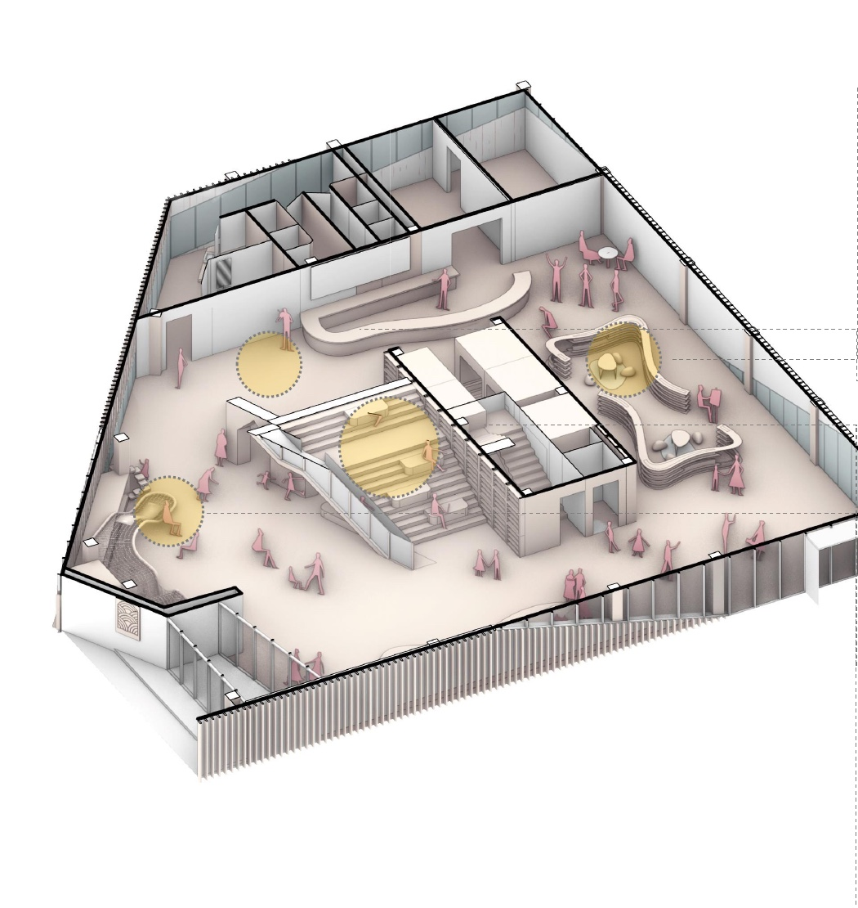
05A / CHILDREN’S SPACEMovement, challenge and discovery
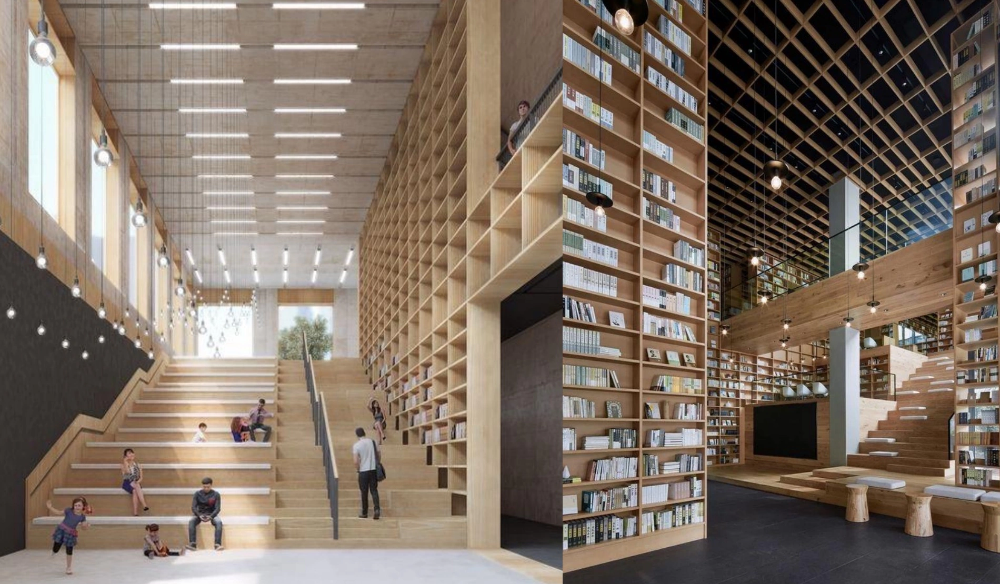
05B / COMMUNITY LIBRARYReading as a shared landscape
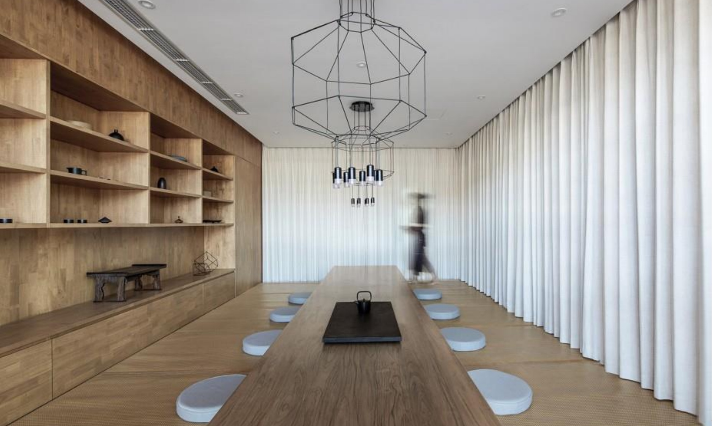
05C / GUQIN TEA ROOMA quiet room for attention and rest
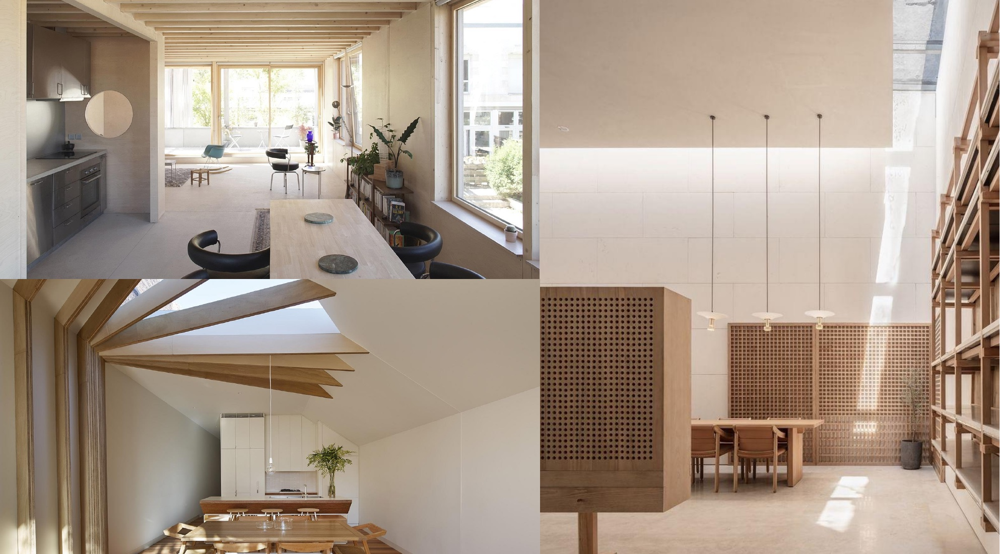
05D / COMMUNITY ROOMRooms opened to light and landscape
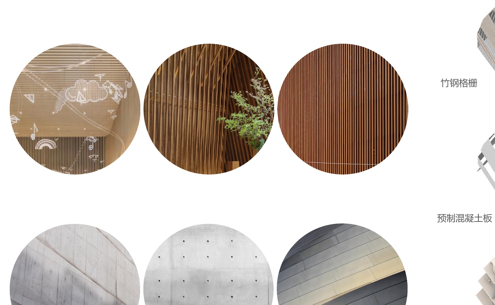
05E / MATERIAL PALETTEBamboo-steel grille, concrete and timber
06 / PUBLIC RECORD
A first draft for a landscape-led cultural community.
This page is an English portfolio draft based on the supplied “Shuishuyu Village ‘Miyun Wenyi’ first opening area overall scheme design” deck. The diagrams and renderings remain source material; project role, delivery status and final naming can be refined in the next pass.